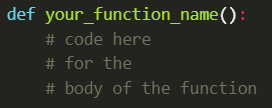
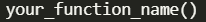
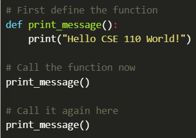
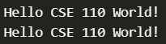
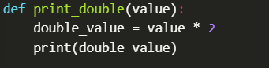
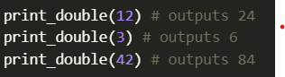
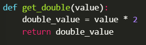
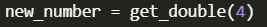
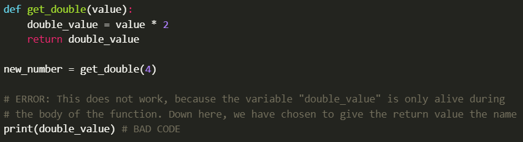
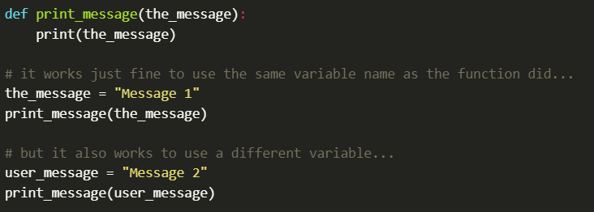

Please feel freee to look at the videos below:
In the videos seen above, you define a function by using the "def" keyword and following your function with parentheses "()" and a colon ":" as seen below:
Later in your program, you can call the function by giving its name and including the parentheses afterward:
The following code demonstrates a function that displays text on the screen. Then, it is called twice later in the program:
This is the output of the example shown above:
When you define a function, you can declare parameters, which are values that it receives from the place that called it. For example, consider a function "print_double" that receives a number, doubles it, and prints the result on the screen:
Then, you can call this function and pass it any value from there as seen below:
Extending the previous example, suppose you want to have the program calculate the double value and return it, instead of printing it to the screen, in case you want to use it in further calculations. In this case, you can use the "return" statement:
Now the value is given back to the code that called it:
The Variable "new_number" would now have a value of 8.
Please be aware that variable names are only valid for the function they are defined in. And, you can even use the variable name in different functions for different values. This can get a little complicated and you'll see it in much more detail in future programs But at this point, you need to be aware that whether you use the same variable name or not, the function will have it's own copy of the value. And you can't use it outside of the function.
The same concept holds true for parameters:
In either of the two cases above, when you are in the function, you'll want to use the variable name "the_message" regardless of what was called down below.
As you start to think about names for your functionsand your variables, you'll find that most often variables refer to things so it is most common to use nouns for them (price, name, response, etc.). Functions on the other hand do things or perform actions, so it is more common to use verbs for their names(print_message, get_initials, open_file, display_error).